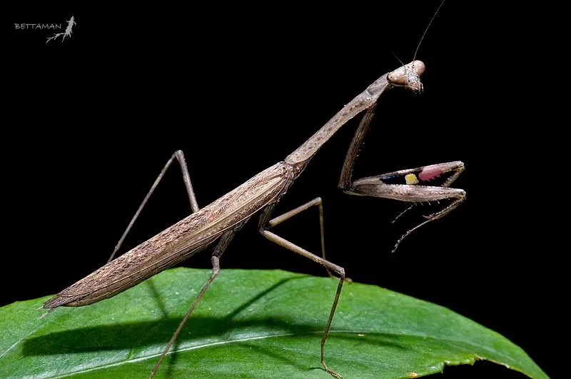

昆虫 · 动物界
棕静螳 Statilia maculata

体色棕褐、体型纤细的中小型螳螂，常静止在草丛中伏击猎物，卵鞘附于枝干，中国南北均有分布。
- 分类
- 门节肢动物门纲昆虫纲目螳螂目科螳螂科属静螳属
- 栖息环境
- 草丛、灌丛、农田、园林绿地与墙角
- 地理分布
- 中国南北各地及日本、朝鲜半岛、东南亚
- 保护级别
- 常见种，无保护级别，属有益天敌昆虫
物种志
棕静螳的雌虫体长约四至五厘米，雄虫略小，体色棕褐至灰褐，体形纤细，前胸背板细长，前足为捕捉足，胫节下缘有一列小刺。前翅狭长，覆于腹背，后翅透明。头部呈三角形，复眼大而突出，转动灵活，能在不移动身体的情况下锁定猎物，这是螳螂最典型的视觉优势。
它分布于中国南北各地以及日本、朝鲜半岛和东南亚，栖息在草丛、灌丛、农田和园林绿地，常在草叶间静止不动，靠保护色隐藏，待小虫靠近便以极快的速度用前足夹住。成虫和幼虫都捕食蚜虫、蝇类、蛾类等小昆虫，是有益天敌。雌螳螂产卵时分泌泡沫状的卵鞘，粘在枝条或墙壁上，越冬后孵化。它没有保护级别，是城市绿地中常见的螳螂。
形态与习性
- 体长雌虫约四至五厘米，雄虫略小
- 体色棕褐至灰褐，体形纤细
- 前足捕捉足，胫节下缘具一列小刺
- 食性捕食蚜虫、蝇类、蛾类等小昆虫
- 卵鞘泡沫状，粘附枝条或墙壁越冬
- 习性静止伏击，靠保护色隐藏
趣味知识
- 它能在身体不动的情况下把头转过来盯着你，复眼的视野几乎覆盖四周。
- 它的卵鞘像一小团干硬的泡沫，粘在墙上一挂就是一整个冬天。
- 它不结网也不追赶，只靠一动不动地等，把伏击做到了极致。